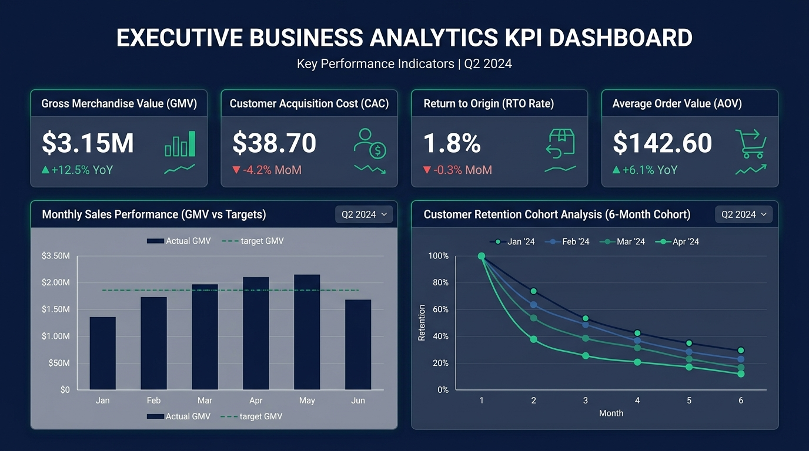

SESSION 3: Domain Understanding for Analytics
1. Core Concepts & Executive KPI Dashboard
Domain knowledge provides the essential business context to distinguish between meaningful trends, operational anomalies, and meaningless statistical noise.

Figure 3.1: Executive Business Analytics KPI Dashboard displaying GMV, CAC, RTO Rate, AOV, and Cohort Retention Curves.
2. Assignment Tasks & Solutions
Task 1: Importance of Domain Understanding (Zomato Food Delivery) ANALYZED
🍔 Why Domain Knowledge is Essential in Hyper-Local Food Delivery:
Food delivery is a dynamic three-sided marketplace (Consumers, Restaurants, and Riders). Analyzing data without understanding these domain mechanics leads to critical errors:
- Complex Operational Timelines: An order's duration is split into Kitchen Prep Time (KPT) and Transit Time. Without domain knowledge, an analyst might blame riders for late deliveries when the root cause was a backed-up restaurant kitchen.
- External Variables: Monsoon rains trigger high order surges while simultaneously causing rider shortages and road blockages. An analyst must account for weather data rather than misattributing drops in fulfillment to app defects.
- Avoiding Harmful Interventions: Pushing promotional discounts to restaurants already operating at 100% kitchen capacity causes delayed deliveries, cold food, and customer churn.
Task 2: Flipkart (E-Commerce) — 4 Essential KPIs DEFINED
| KPI Name |
Definition & Formula |
Strategic Business Importance |
| 1. Gross Merchandise Value (GMV) |
Total monetary sales volume of all goods sold on Flipkart:
GMV = ∑ (Units Sold × Selling Price) |
Measures total platform scale, market dominance against Amazon, and overall e-commerce market share. |
| 2. Repeat Purchase Rate (RPR) |
Percentage of buyers who place ≥ 2 orders within 60–90 days:
RPR = (Repeat Customers / Total Customers) × 100 |
Indicates organic customer loyalty, brand trust, and long-term customer lifetime value (LTV). |
| 3. Cart Abandonment Rate (CAR) |
Percentage of initiated carts that do not complete checkout:
CAR = (1 - Completed / Initiated Carts) × 100 |
Pinpoints checkout friction such as unexpected shipping fees, missing payment methods, or complex forms. |
| 4. Return to Origin (RTO) Rate |
Percentage of shipped (especially COD) orders that fail delivery:
RTO Rate = (Returned Shipments / Shipped Orders) × 100 |
A major cost drain in Indian e-commerce; measures wasted two-way freight costs and inventory blockage. |
Task 3: Paytm (Digital Payments) — Customer Acquisition Cost (CAC) CALCULATED
Definition:
Customer Acquisition Cost (CAC) is the average expenditure required to convince a prospective user to install the Paytm app, complete KYC, and execute their first qualifying financial transaction.
Real-World Activity Calculation Example:
- Digital Performance Ads (Google, Meta, YouTube): &rupee;35,00,000
- First-Transaction Cashback Promotions (&rupee;50 cashback): &rupee;25,00,000
- Field Sales Agents & Merchant Soundbox QR Setup: &rupee;20,00,000
- Brand & Event Sponsorships: &rupee;20,00,000
- Total Campaign Spend: &rupee;1,00,00,000 (&rupee;1 Crore)
- New Transacting Users Acquired: 200,000 users
CAC = Total Acquisition Spend / New Transacting Users
CAC = &rupee;1,00,00,000 / 200,000 = &rupee;50 per newly acquired customer
Business Implication: With an average customer lifetime value (LTV) of &rupee;350, a CAC of &rupee;50 yields a highly viable LTV:CAC ratio of 7:1.
Task 4: Novel Customer Satisfaction Metric for Swiggy DESIGNED
Proposed Metric: Promise Gap Score (PGS) / Perfect Order Fulfillment Rate
Traditional revenue metrics hide customer frustration. A &rupee;1,200 order that arrives 25 minutes late with missing items generates top-line revenue but destroys customer retention.
PGS (%) = (Orders Delivered On-Time with 100% Item Accuracy & Quality Packaging / Total Orders) × 100
Operational Impact:
- Granular Restaurant Auditing: Isolates kitchens that frequently miss order items or delay packing, allowing targeted merchant coaching.
- Hyper-Local Route Re-tuning: Identifies delivery clusters prone to traffic bottlenecks so dispatch algorithms can dynamically adjust buffer times.
- Proactive Churn Mitigation: When live telemetry detects an unavoidable delay (>15 mins), the system can proactively issue an apology notification and &rupee;50 Swiggy Money credit before the customer complains.